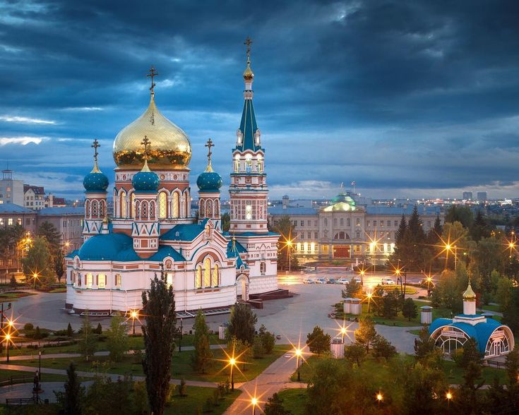
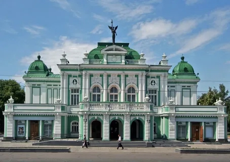
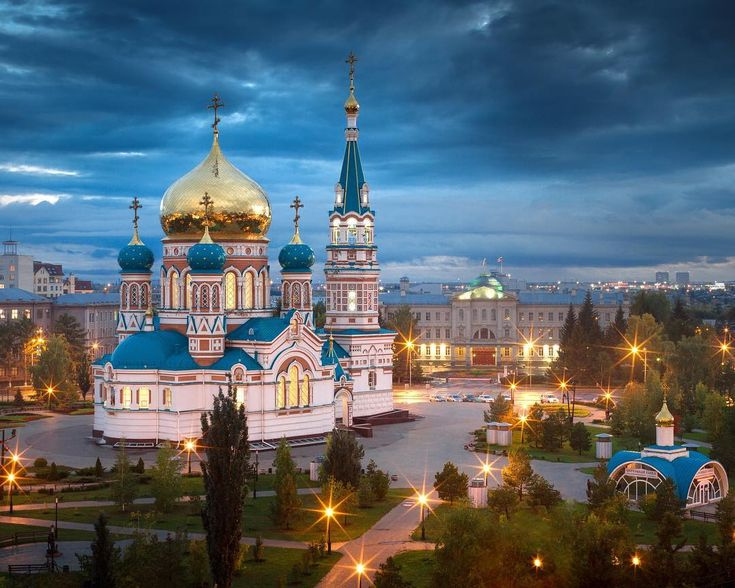
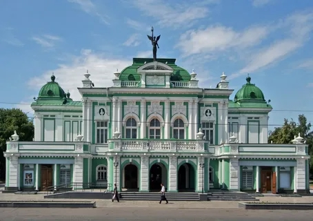

О проекте
«Пушкинская карта» — это виртуальная или пластиковая банковская карта с ограниченным балансом, средства на которой можно тратить только на посещение культурно-массовых мероприятий на территории России. В 2025 году лимит карты — 5000 рублей, из них до 2000 рублей можно тратить исключительно на российские кинофильмы, одобренные Министерством культуры
По информации на январь 2025 года, в программе «Пушкинская карта» в Омской области участвуют 137 учреждений культуры, в том числе учреждения, учредителями которых являются Министерство культуры Омской области, Администрация города Омска и муниципальные районы.
Статьи
Культура
— это не только наследие прошлого, но и живой источник вдохновения,
который формирует нашу личность, расширяет кругозор и обогащает внутренний мир.
Сегодня молодёжь получает уникальную возможность прикоснуться к искусству, истории и
театру благодаря программе «Пушкинская карта». Этот проект открыл новые горизонты для
студентов и школьников, делая посещение культурных мероприятий доступным и увлекательным.
Омск
— город с богатой историей, где сосредоточены театры, музеи, концертные залы и
выставочные пространства, готовые распахнуть свои двери для молодого поколения.
Мы приглашаем вас в
увлекательное путешествие по миру искусства, где каждый сможет найти что-то близкое своему сердцу —
будь то театральная постановка, выставка живописи или историческая экскурсия.
 


